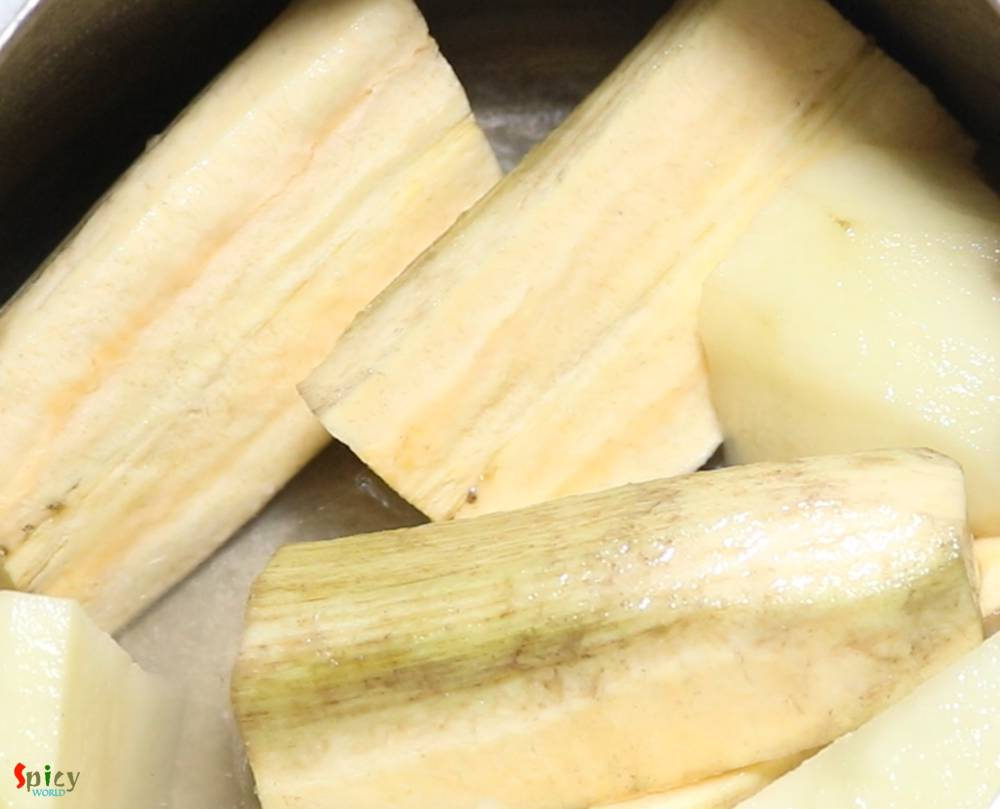
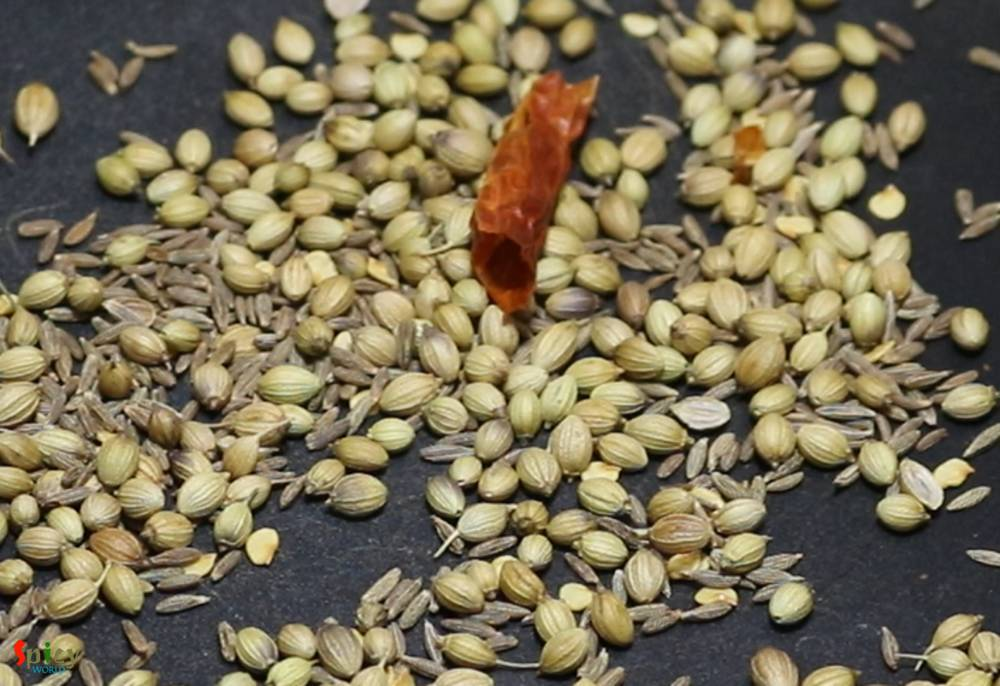
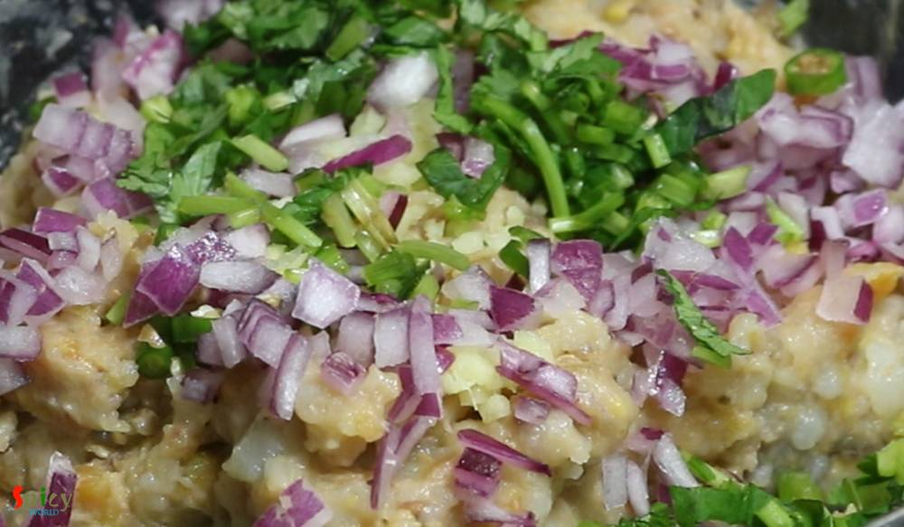
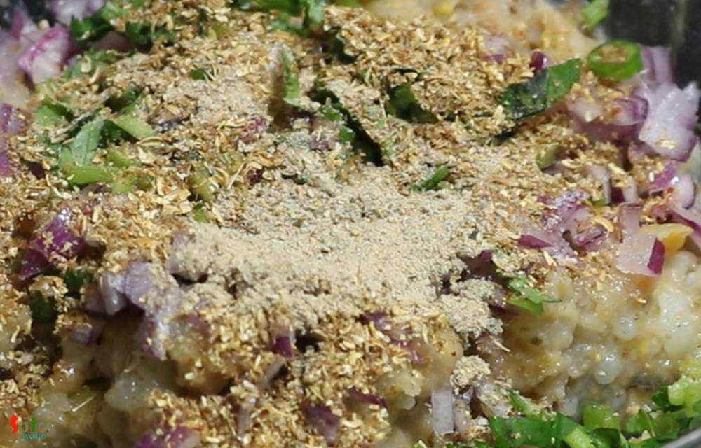
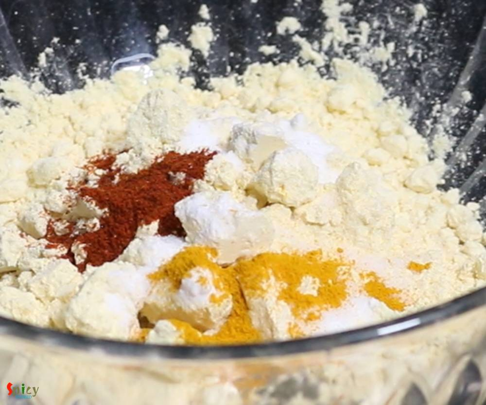
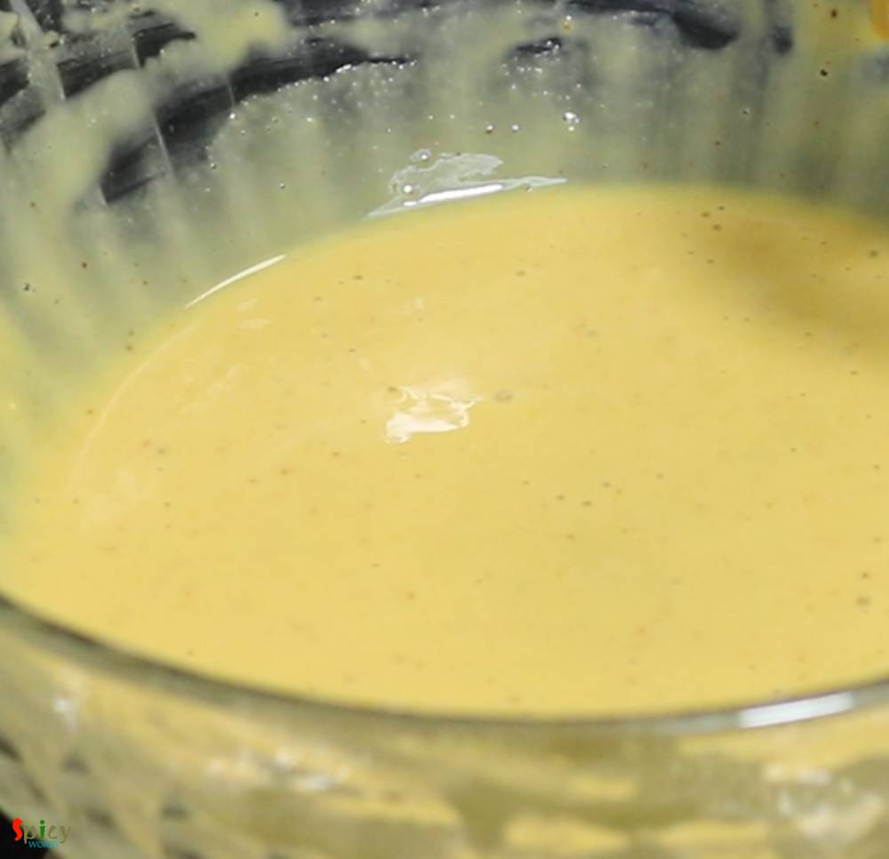
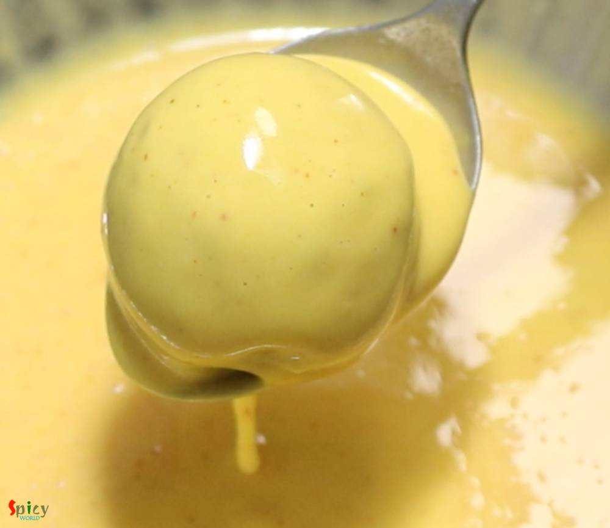
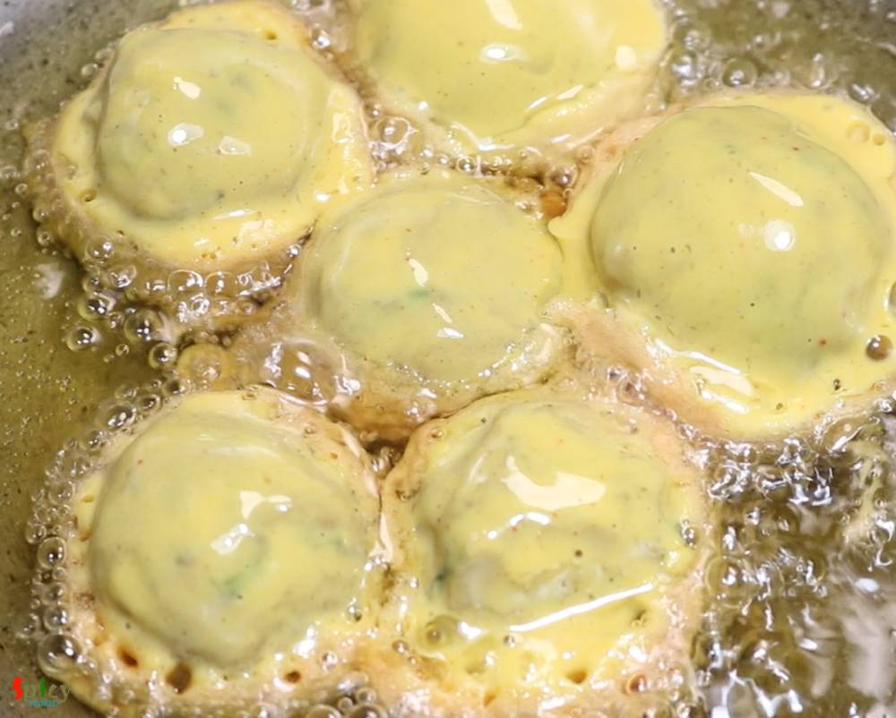

Simple and Easy Recipes
Kanchkolar Chop / Raw Banana Fritters
© 2016 Spicy World, Published on: Apr 16, 2019
After marriage during my stay in India, I was a fan of my MIL's Kanchkolar Chop. She used to make them at least once in a week in the evening. Anything batter fried or crumb coated is either Chop or Cutlet to Bengali, like Alur Chop, Mochar Chop, Enchorer Chop, Macher Chop. The taste of her Raw Banana Fritter was so much better than the street shop's ones. Adding chopped onion, coriander leaves and chaat masala is my addition. She used to make curry with left over Kanchkolar Chop. That also tastes yumm! Try this easy recipe in your kitchen and let me know how it turned out for you.

Ingredients
- 1 raw banana.
- 2 medium sized potatoes.
- 1 Teaspoon of chopped ginger.
- 2-3 green chilies, finely chopped.
- 3 Tablespoons of chopped onion.
- Some chopped coriander leaves.
- 1 Teaspoon of chaat masala or lemon juice.
- Whole spices (2 Tablespoons of cumin seeds, 3 Tablespoons of coriander seeds, 2 dry red chilies).
- Salt and sugar as per your taste.
- Half cup of besan or gram flour.
- A pinch of baking soda.
- Half Teaspoon of turmeric powder and red chili powder.
- Water as required.
- 2 Tablespoons of rice flour (optional).
- Cooking oil for deep frying.


Steps
Remove the skin from raw banana and potatoes.
Then put them in pressure cooker along with half cup of water and a Teaspoon of salt.
Cook until 3-4 whistles come, let the pressure release on its own.
In the mean time, dry roast the whole spices for 3-4 minutes on low flame.
Then grind them to a fine powder. It is called Bhaja Moshla.
Now mash the boiled banana and potatoes with your hand or masher.
Then add chopped ginger, green chilies, onion, coriander leaves.
Also add salt and little sugar, 2-3 Teaspoons of that dry roasted powder and chat masala.
Mix everything very well.
Apply little oil within your palm, take small portion and make small balls out of them.

For the batter, take besan in a bowl along with some salt, baking soda, turmeric powder and red chili powder. Mix well.
Gradually add little by little water and start mixing with a whisk. Make a smooth batter.
Batter should have pouring consistency.
Put one ball into the batter, coat well with a spoon.
Then drop it gently in medium hot oil.
You can fry 5-6 at a time.
After 5 minutes change the sides and fry until they become golden in color.
Then take them out in a tissue paper.
Your kanchkolar chop is ready to serve.
Serve this hot with green chutney or sweet tamarind chutney ...
")